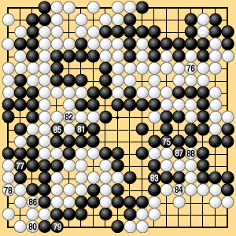

| 6.1 Normal Case (2) |
|---|
| Under territory rules I, from Black 275 (Black 75 in Dia. 6-1-2) to White 288, the players alternately fill all the neutral points, then Black passes. White also passes. This is the preliminary end of the game. |
|  |
| Dia. 6-1-2 (275-288) |
|---|